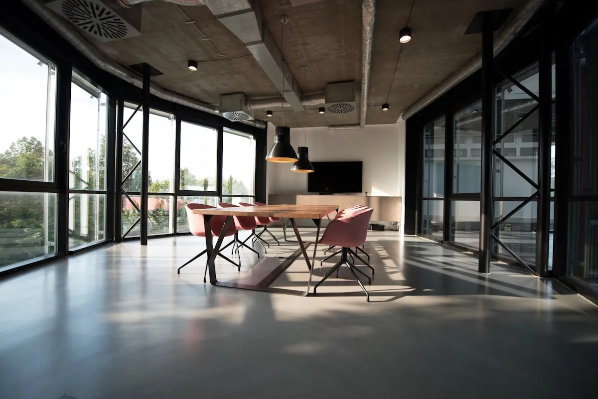

Integrity
We give advice that serves the client's interest, even when it is not the answer the client hoped for. Candour is part of the service, not a risk to it.
STACKLY Legal advises businesses, boards and institutions on the decisions that shape their direction — transactions, disputes, governance and regulation.
The firm was established in 2004 by a small group of lawyers who believed corporate legal advice should sit closer to the decision it informs. Not a service delivered at a distance, but counsel developed alongside the people accountable for the result.
That conviction shaped the practice from the very beginning. Teams stayed small. Partners stayed close to the work. Advice was written to be used, not merely filed.
Two decades later, the firm has grown in capability and reach without departing from that founding discipline. The matters have become more complex. The standard has not changed.
What began as a handful of corporate mandates now spans nine jurisdictions, multiple disciplines and a client base that returns to us across years, not just transactions.
Law is precise. Judgment is discerning which precision matters, and which decision it is ultimately serving.
Our role is not to overwhelm a client with every possible interpretation. It is to identify what is material, explain the consequences clearly, and help the client decide with confidence.
We give advice that serves the client's interest, even when it is not the answer the client hoped for. Candour is part of the service, not a risk to it.
Language, structure and sequence matter. We treat drafting and analysis as the substance of the work, not its administration.
Our view is formed on the merits. We are not swayed by convenience, pressure or the momentum of a transaction.
The partner who advises remains accountable for the matter. Responsibility is not delegated away from the relationship.
Growth has been deliberate. Each expansion has followed client need rather than preceding it.
STACKLY Legal opens with a corporate and commercial focus, advising founder-led businesses on structuring and contracts.
Client demand for representation in commercial disputes leads to a dedicated litigation and arbitration capability.
A decade in, the firm formalises a transaction practice advising on acquisitions, investments and business combinations.
Increasing regulatory complexity across sectors prompts a dedicated advisory group for risk, compliance and governance.
The firm begins coordinating multi-jurisdiction matters for clients operating across Asia, the Middle East and Europe.
Twenty-four lawyers across nine jurisdictions, advising on matters where legal precision and commercial judgment converge.
Senior lawyers who remain directly involved in the matters they advise on — from first instruction to conclusion.
A technically correct answer that ignores the commercial reality is rarely a useful one. We work to understand the objective first, then build the legal position around it.
We establish the commercial objective before advising on the legal route.
Partners stay close to the analysis and the client relationship.
Written to inform a decision — not to demonstrate complexity.
Strategy is translated into precise documentation and action.
We advise on matters in our home jurisdiction and coordinate cross-border work where a client's interests extend beyond it.

Good legal work depends on the quality of the people doing it and the environment in which they do it. We keep teams lean, give responsibility early, and expect the same standard from every level.